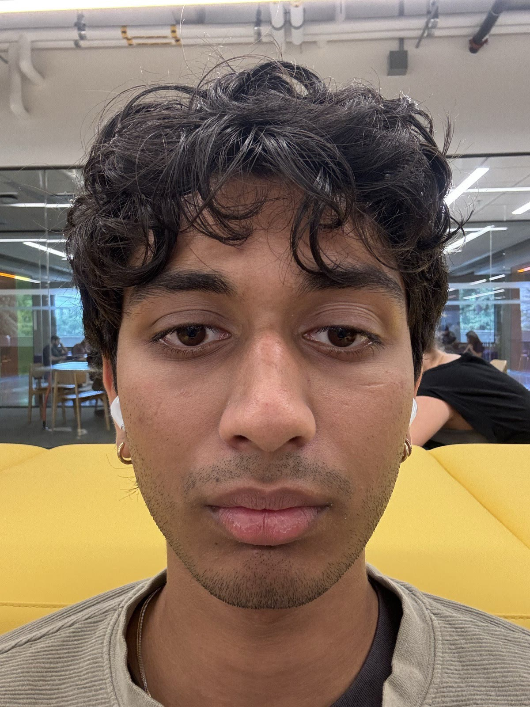
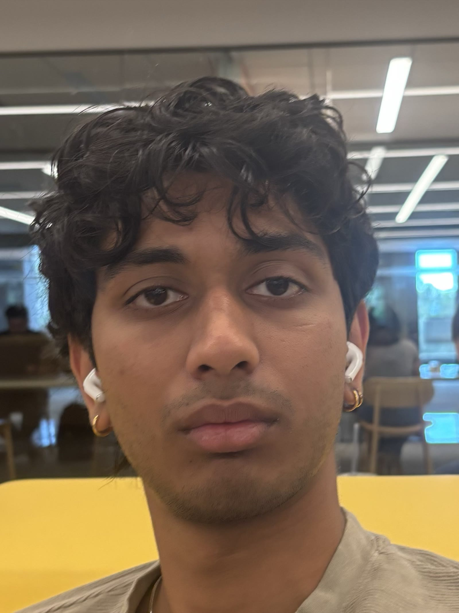

← All projects
CS180 · Fall 2026 · Project 0
Becoming Friends with Your Camera
Vikram Bhamre · UC Berkeley
1. Selfie
2. Architecture
3. Dolly zoom
Part 1 · Selfie: close up vs. step back and zoom


Part 2 · Architecture: far and zoomed vs. close and wide
Part 3 · Dolly zoom